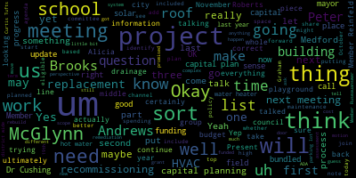
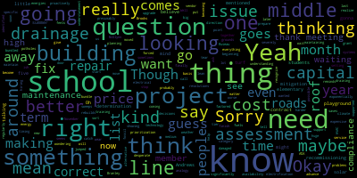

[SPEAKER_01]: Oh, yeah.
[Graham]: Let me just one second to find the agenda. That was open apparently. Here we go. Okay. Okay, so I'm going to read the meeting notice so we can get started and then. We can dive in, so please be advised that on Tuesday, October 15th at 5 PM, there'll be a strategic and capital planning subcommittee meeting. held through remote participation via Zoom. This meeting is being recorded. The meeting can be viewed live on Medford Public Schools YouTube channel through Medford Community Media on your local cable channel, Comcast 9, 8, or 22, and Verizon channel 43, 45, or 47. Since the meeting will be held remotely, participants can log in or call in by using the following link. The meeting ID is 957-9454-4382. Additionally, questions or comments can be submitted during the meeting by emailing Jenny Graham at medford.k12.ma.us. Those submitting must include the filing information, your first name and last name, your Medford Street address, and your question or comment. I'm going to call the roll. Member Rousseau? Present. Member Reinfeld? Present. Member Graham? Present. So three present, zero absent. Our agenda today is really to kick off the strategic and capital planning process, particularly with a focus on the capital planning component, which is based on the policy that we passed unanimously last spring to lay out a series of steps for capital planning that line up and to the best of our ability, don't overlap budget season because that becomes too many things at the same time. So the goal here is for us to do this capital planning work in advance of the sort of operating budget conversation so that A, we can feed that both to the mayor and to the council in advance of budget season, but also so that we're not sort of stepping on The need for, you know, extra meetings and things like that, um, for all of our staff, uh, for that purpose. So. Um, we have a meeting scheduled today and then we have a meeting scheduled in November. Um, we may or may not need both meetings. We'll sort of see how it goes today, but the goal for us is to. take last year's capital plan and go through it together and make some updates to it to the best of our knowledge, as well as add potential capital projects to it that don't exist on there now. And we'll talk a little bit about some of the work Peter has been doing to collect that information. And then really the other thing for us to do will be ultimately to come up with an attempt at prioritization of some kind for the whole giant list, um, so that we can clearly identify that for the school committee. Um, and then ultimately, um, to the mayor and the council and also, um, identify if there are projects that are potentially eligible for community preservation at, um, act funding, um, whether there's projects that are eligible to be included in that school spending, yes or no. And then, you know, sort of all other and to start to have an ongoing process, which has been a little bit haphazard over the last couple of years, or really maybe forever. But certainly, that it's been a thing that has been a work in progress for us. So really trying to get a more stringent process in place that aligns with that policy is sort of where we're at. Does that make sense so far? I am going to pull up a copy of Our Last capital plan. One second. This is where I will note my extreme dislike of Google Drive. So give me just one more second and we'll find it.
[Ruseau]: I think I found it, Jenny. I'll put it in the chat for you.
[Graham]: Thank you. I think I found it at the same time. OK, found it. Sorry about that. I'm going to share my screen. Um, so the first thing I thought we would do is just refresh everyone's memory about what, um, the capital plan looks like as it existed last year when we met. Um, and then we can talk a little bit about, um, where we are with some of these projects. Can you all see that?
[Edouard-Vincent]: Is it big enough? Can you make it a little larger, maybe 200?
[Graham]: better?
[Edouard-Vincent]: Yes, it's better now.
[Graham]: Okay, good. Okay, so this is the capital plan as of the end of June. We talked about all of these projects in our capital planning meeting and then this ultimately is also the capital plan that was submitted to MSBA. Um, so it contained the projects, uh, that. We knew about or we're planning for last year. Um, and so let's just sort of go from top to bottom. So the first three projects are led light replacement projects, um, for Brooks, Missittuck and Medford high. Um, those are, um, at the time we said they were planned for FYI 25. And the way this works, my understanding is that it's on-bill financing through National Grid, and that we can, that these projects are in progress, and there's a, like, five-year payment cycle to do all of this work, because it contributes to energy savings. So that's the first three here. That's these first three rows right here. Um, some other projects that, um. Sort of shifting gears, we, we made sure we're on the plan. Um, we have this, um, solar roof and battery project at the Andrews, which is actually a city sponsored project. And it has been in the works for quite some time, um, because it's. being completed by the City of Medford. We don't have a whole lot of information about it and we might need to, perhaps at the next meeting, invite Alicia Hunt or others to join us. But there were multiple parts of this project at the time. There was putting solar on the roof. putting solar batteries in place, and all of that was to help the Andrews Middle School become like an emergency shelter sort of resilience hub for the city, which lacks that now. I don't have a tremendous amount of information about that, but that's what that one was. Our HVAC replacement project is listed here as well for both McGlynn and Andrews. Um, we also then are sort of looking forward to say. Um, we will need to do roof rebuilds for McGlynn Elementary, Brooks, Missittuc and Roberts. So all of those schools are sort of at the stage where we need to begin watching, um, roof replacement needs. The Andrews has already been replaced as part of, um, that product, the solar roof and battery projects. So that updates to the roof had to be done before the solar, um, could even be viable. Um, As we talk about HVAC, we know that we will also have HVAC maintenance and replacement work to do at some point in the future around for Brooks, Missittuck, and Roberts because all of those systems are as old as the Andrews and McGlynn. Um, and, uh, you know, we will, uh, be looking at that and I'll talk, I'll mention recommissioning in just a second. Um, we have, um, some district wide security upgrades on the next, um, on the next row here, uh, right here. Um, and then we do have, um, Playground renovations potentially at our other three middle schools. So I think everyone knows how amazing the work at the McGlynn was the good thing. You know, the good thing about that project is that it has really solved a whole host of issues at the McGlynn but The McGlynn space is so unique, there's very little that you could sort of envision lifting up and putting in place in some of our other school buildings because the other school buildings just simply don't have playgrounds sized like that. So there is some things to think about from a playground innovation perspective. We also have on this list a front stairwell replacement project, ADA accessibility improvements and gutters for the Curtis Tufts building. We have fire pump control work for McGlynn complex. We have the Brooks hot water heater. This actually update here has been approved. in September, I guess it was October, October 2024. So that work is in progress now. So that's good news. We have also on this list, we have parking lot paving at the McGlynn and Andrews Complex. We have drainage at the field at the Brooks. Yeah.
[Ruseau]: Sorry, Member Grant. The FY25 for the Brooks water heater, didn't that come in at $267,000?
[Edouard-Vincent]: It did, yes. That's a wrong spot.
[Cushing]: Wrong spot, sorry. And just so everyone's, pardon me, that's including a 10% contingency just so that everyone knows.
[Graham]: Yep. And then we have a project to replace the field flashing behind the brick at the McGlynn Elementary that causes rain in the kindergarten classrooms when it is driving sideways rain apparently is the like factor there that sort of causes that problem. Um, and then we also have, uh, we also put on the list, um, the front Plaza, uh, settling at the McGlynn and the Andrews, um, and some, uh, potential remediation for ADA compliance. Um, so that was everything on our list, um, as of June of last year. Any questions about that so far? Okay, so the next piece of this is to start to identify, are there other projects that need to be placed on this list that aren't here yet? And Dr. Cushing and I met a month or so ago and we talked about uh, efforts, um, which are consistent with the policy that we pass to make sure that our building leaders and all the buildings, um, participated in this process, um, by, uh, submitting any of their capital needs to us, um, via our new operations hero, um, ticketing system for maintenance and, um, custodial services. So, um, Dr. Cushing put out a memo and a call to the team to. collect input so that we could add to this list. And I will ask him to tell us how that went and what he has to share.
[Cushing]: Thank you very much, Member Graham. So the principals and other members of the team responded well. They also imported to Operations Hero, which is our new, started last year, district ticketing system for emergency, not for emergency, I apologize, for buildings and grounds requests. The primary things that principals are still reporting are really requesting upgrades of security systems. upgrades of exterior door locking systems to move from keyed to keyless. And at the McGlynn and the Andrews complex, it's already on the list, but is the settling of the plazas which actually is now making the buildings not ADA compliant but that's a it's a concrete settling issue that we have a request out to a company to give us quote on what that construction management and design would be to either repair, alter, or to do. The high school has requested a new motor for the freight elevator that was damaged in the flood that we had last year. And the freight elevator is a much larger elevator. So that would be approximately $20,000 to $25,000 to go on to the freight elevator. I'm also just looking through my notes here.
[Graham]: It's the motor, is that correct?
[Cushing]: Yes, correct. And you said it was how much Peter between 20 and $25,000 is our initial estimate. Okay. Um, they've also we also have to do this wouldn't really fall under. Depends on how much would be, but we do have to put door sweeps on many exterior doors as the buildings have settled overtime to make sure that we're preventing. As part of our integrated pest management, so our. Our IPM company has really suggested that door sweeps go on many of the exterior doors as well as mitigation of our Um, dumpster areas, um, due to road and challenges that we're facing, uh, not inside buildings, but at those, um, levels. Um, the, uh, also have requested for all schools, new bike racks. Uh, we do have a grant for some of that work, uh, upwards of $20,000 at the McGlynn. the Andrews and the high school to replace with modern bicycle racks as well as bicycle repair stations at those three schools. So we have a request out to a company known as Darrow to provide us quotes for the equipment and the installation as well.
[Graham]: So, Peter, is the request at all schools?
[Cushing]: Yes. Yep. The request is at all schools.
[Graham]: And the grant is specific to the McLean MHS, right? Yes. Yep. OK. And
[Cushing]: But the bulk of what has been requested, also I don't know if it's under there specifically district wide security upgrades. One of the things in particular with those is making sure that there are cameras beyond the first floor of each school. That request came in repeatedly. if not in specifically entered in operations hero, but also requested, um, you know, of making sure that principles in the system principles have the ability to monitor, um, the entire building.
[Graham]: Um, so we have $1.9 million as a cost estimate. Is that does that include locks soup to nuts? That includes everything. Yes. Okay. And the grant funding did not come through. Is that correct?
[Cushing]: Sadly, no. And the grant funding would have provided, just so everyone is clear, would have provided door locks at up to eight doors at the high school, five doors, between three and five doors at the outside schools. cameras covering the full entity of the middle schools, the high school, and then telephones in every high school classroom.
[Ruseau]: Member Graham?
[Graham]: Yes, Member Ruseau.
[Ruseau]: Thank you. Peter, do we know if that included handling I mean, these would be networked. So do we know if that included figuring out how we're going to network at the high school?
[Cushing]: Yes, it did. It included full wiring. Excellent. Yep. Thank you. I tried to look at, I tried to in those quotes, I tried to look at things that would alleviate the lift on a strain district system and try to make sure that we would deliver the system. And the 1.9 million is for a system that would be 100% cloud based. There is some discussion as to whether or not maintaining servers is a better way to go for less chance of hacking or other security challenges with that.
[Ruseau]: I would certainly like to be involved in any conversation on that point. Yep, happy to.
[Graham]: Thank you. So Peter, the new things that you, I just want to make sure that I got them as you were talking because that's first I was listening and then I was like, oh wait, I'm the note taker. I should start writing some things down. So I wanted to make sure I got them all. So with the bike racks, the door sweeps, the freight elevator motor. Yep. Did I miss anything?
[Cushing]: You didn't. I mean, the list is fairly comprehensive to begin with. So as far as capital needs. Oh, I'm sorry. The other thing, too, is We're including it in the HVAC maintenance. However, I do think, you know, it may be something that we want to call out individually is all of our network closets and other technology spaces across the district have independent from the native building systems. They have independent mini split systems so that regardless of the main building system, they are to essentially run 24-7, monitor themselves, and to make sure that they're providing cooling. The overwhelming number of these systems across the district, and I think the number is 14 off the top of my head, have failed. And so we have doors open to make sure. It is part of the overall HVAC process. We've been very clear about that. Due to really continually changing refrigeration, and I'm sure people have heard me talk about R22 and various things like that. Due to really constant changing in the HVAC world, the systems that we would need to replace these so that we're not replacing them with already outdated Um, the materials and equipment will not be available until Q two of the current calendar of the upcoming calendar year, so we're expecting them to be available in March. We're planning that that will be one of the first phases of our, um. capital investment in the HVAC systems that will go district-wide because what they do, and Member Rousseau can speak to this, and I'm sure many other people can as well, but they help keep very sensitive equipment temperature regulated, and right now we are experiencing challenges with temperature in some of these rooms.
[Graham]: Dr. Cushing, when you said it's included in the HVAC project, do you mean just at McGlynn and Andrews?
[Cushing]: Um, it is included, uh, in that in that it is. I'm sorry. It is not included in the overall cost price of $20 million. It is additional to that $20 million. It's only about the initial estimate is in the neighborhood of 200 to $250,000. However, it is in addition to, um, the estimate of the 20 million. Okay.
[Edouard-Vincent]: Got it.
[Graham]: Sorry, I'm just going to make some notes. Here we go.
[Cushing]: and if you want like grant funded that's through uh community preservation what is sorry uh the bike racks the bike bike modernization and we do have an application in right now uh it i've been told that it's a very competitive round uh but to look at a uh historic assessment of the curtis tough school to see what we need to really get that building envelope, stairs, windows, and other things along those lines funded through that. It is the last of those types of buildings still used as a school in the city. And it has significant value, I think, and others think in speaking to at City Hall for its impact on South Medford. And we really want to look and see what we can do to make that building really shine again. I'm so sorry.
[Graham]: That's OK. So Peter, for that project, is the estimate still $20,000, or is it something different?
[Cushing]: It's between $20,000 and $40,000. And that is just an assessment. It is not the replacement of the stairwell. That would not include like the actual replacement, this is to understand what the total cost would be around roof repair, cupola repair, front stairs, doors, things along those lines.
[Reinfeld]: My question is what of these can or should be bundled right does it. Do we need to do. Does it help to do all the HVAC together because of a vendor or because of timing, or is everything here, like the roof rebuilds does it not matter which building it's on.
[Graham]: So remember, Reinfeld, the other thing that is that is being actively bundled with the HVAC project is this recommissioning process that we've talked about a couple of times. So that is something that is being bundled in with that. And what what recommissioning is going to tell us is how much light do we have left on the roof? how much life do we have left in the HVAC system and those kinds of things, as well as like smaller, easier things to address and fix. So the team was working on a proposal for that piece of the work around recommissioning for all of the buildings outside of McGlynn and Andrews, except for MHFs and Curtis Tufts, so Brooks, Missituck, Roberts. Um, and that would be included in that work and in that budget. I think from a city perspective. The, I think the mayor and the council broadly know that the HVAC replacement is going to cost $20M. Um, the exact costs I think are still very much being refined and defined. Um, and so the funding source of that in terms of how it'll be paid for, I think still is. technically uncommitted because we're just not like ready to do that, to take that step just yet. And so I think the one question is like what really should be bundled in there when it comes to like the networked closets and the roof placements, et cetera. So certainly if you're going to, I think that's a question for us and maybe a question to ask Alicia if we are able to have her join us next time. Is really to think about if we're thinking about McGlynn and McGlynn complex and Andrews, um, we should be thinking about all of these parts as part of that bid, um, where the other schools, Brooks, Mr. Chuck Roberts may need to be in a subsequent planned round where, um, we do the recommissioning first and then it sort of leads us from a priority perspective. Does that make sense? That makes perfect sense. OK. So I'm just trying to Peter. Peter, has the roof been officially deemed as part of the scope for the McGlynn, or not yet?
[Cushing]: Not yet. And so just so everyone's aware, we have weekly meetings with our owners project manager, JLL, and our design team, P2Q. We'll have another one tomorrow at 11 AM, just so everyone's aware. We learned last week that a lot of the equipment, particularly in the McGlynn, because they now have to have energy recovery wheels on the equipment as part of energy efficiency standards, that in particular, the McGlynn space, which is kind of the attic of the auditorium, it's going to be extraordinarily difficult to get equipment in there unless it's custom built, which would then add to the cost. Um, so we may have to be cutting into the roof. And the question that we had today, myself, John McLaughlin, Paul Riggie, and Jerry McHugh, was we're going to have a roof assessment completed, uh, as soon as possible. Uh, Garland Roofing will come out and take a look at the roof, understand where it is in its lifespan, and really try to get a sense of, um, what we should do with the roof, especially if we're going to have to cut significant holes into it, and then start patching those holes with a potentially aged roof. Building's now 22 years old. By the time this project is done, it'll be at 23 years old. Really try to understand the life. If we do a roof replacement, it helps us with the sizing of the equipment for the HVAC because in 2011, the building codes in Massachusetts changed, and there's now a requirement for significantly more insulation. and that will reduce the amount of heating and cooling that is actually needed in the building. And having been through a project like this before, I will say it is surprising how significant the reduction is by replacing the insulation on the roof. Um, so it is something that we are going to be doing pretty quickly to have an assessment of that roof done. So we know if we're going to be including that, um, which I can't really venture against because I'm not a roofer. Um, but you know, the McGlynn is a large complex. The Andrews roof about three or four years ago in anticipation of solar had an application that I believe is called the White Knight. and a white roofing film. Film is probably too light a word, but the roof was essentially sealed with a new film. You won't necessarily get the R value of new insulation, but it does provide you a really good surface to install solar on, as well as protecting any imperfections that have developed in the roof over time. At the Andrews, we don't anticipate having to cut into the roof as much as potentially the sides of the building where there are already vents available to make this HVAC replacement happen.
[Reinfeld]: Okay, that reminds me of one of the resolutions we just had, I think last month or maybe it was the beginning of this month, around understanding what the needs to upgrade electrical systems to move away from fossil fuels. I realize that's not a specific project, but that's something we want to be planning for so that we're not kind of forced into making these decisions around. just on the basis of cost and availability. So that's an assessment that we need.
[Cushing]: And I forget if I mentioned member Reinfeld during the, and I don't think I did, I may have mentioned it at the city council meeting, but the committee of the whole, if we had decided to go with a full electric option at the Brooks for the hot water heater, for example, the lead time for the, and now this is an emergent, essentially an emergency repair because the hot water heater fails, but if let's say one of our other buildings, we're looking at about a 12-month lead time to get the necessary grid upgrades done for transformers outside of the building. And for anyone who's an electrical engineer and is cringing at how I'm describing it, I apologize. But essentially to upgrade the transformers outside the building to be able to deliver the power that would be needed for some of these systems, you're looking at about a 12 month lead time. Also, that work is 100% the cost responsibility of the district. So it's not just a plug and play, it's you have to plug and pay for those new transformers yourself. Once again, I don't want that to be a discouraging factor, but it is something to consider.
[Reinfeld]: Though presumably that's the kind of thing, I guess then that question comes to the same question we had before. If we wait on that, does the price go up or down? Because some capital projects, the price goes up if you don't do it right away, and sometimes it goes down significantly if you give it a year for the technology to catch up. So which direction does this lean? Do we know?
[Cushing]: I can't answer that. What I can say is, uh that the hot water heater was initially anticipated $110,000. Yeah. We've budgeted $267,000. So I think in all honesty the costs are only going to go up.
[Graham]: On the topic of hot water heaters, do we have other hot water heaters that are in need of replacement? So end of life. I thought this was the last one to go.
[Cushing]: So this is the last of the original. I have to start working on like so one of the one of the other things with Operation Hero is as we add new equipment, we can QR code all the equipment and then it will store all of the maintenance and essentially history of whatever the piece of equipment is. So as new equipment is deployed, and as we make repairs to things, we will be adding QR codes. We're actually having our maintenance staff train tomorrow on this feature so that we can start tracking and asset tagging all of our equipment in the district. This is something that we're going to do with the new McGlynn playground, it's elements there. But what we want to do is we want to make sure that we essentially have clear and concise records, not saying that we don't right now, but clear and concise records on all of our equipment, especially the new things that we're installing that are high tech and really require a high level of skill to maintain and operate.
[Reinfeld]: So that, and so the cost of doing that is people's time, correct? Or is it time and training? Is it hiring of people?
[Cushing]: Time and training. I think as we look at our maintenance team, I think we really have to look at what can we maintain in district and what are the things that we're going to have to go out for. But I think the asset tagging is something that can definitely be done in district with the staff that we have now. We just need to provide them some training and then Two of the three members have district-issued devices, so we are recommending that we provide the third with a device so that they can easily scan and upload. It has a speech-to-text functionality that's, like many speech-to-text, very good. So it's not a matter of typing in, it's just a matter of speaking in and updating that way.
[Reinfeld]: Okay, then my other question in terms of making this list. These are all the things that we know are going to be big problems soon-ish. Is there a kind of middle tier list of things that we know are coming in the medium term, but if we don't proactively maintain them, they're going to get worse and become even exponentially more expensive to fix? And I'm thinking about The analogy here is things like our roads. It's a lot harder to repair roads that are severely weather damaged and potholes and all of this than to do maintenance on things that are showing wear and tear. And that saves us from doing desperate repairs later on. And I know we didn't, I didn't ask you to prepare this in advance of this meeting. So maybe this is a better question for November, but I want to think about what we need to fix now to stop it from becoming a huge cost?
[Cushing]: So I think that's a really good question for November. The one thing I will say on it is that working with Paul Riggie and Jerry McHugh, we are looking at the preventative maintenance contracts that we need to have in place to make sure that we are being responsive. The district has operated on a, as opposed to preventative maintenance, has acted on, operated on a break then fix operational history for the last several years. And that comes from, when you cut a budget in a school, you wanna cut as far away from students as possible. And facilities is a great place to make those cuts because what you do is you live on a wing and a prayer or a whim and a prayer that things won't break. Unfortunately, they always do. right? And it's very easy to also, member Reinfeld and others, just to say, you know, if we have preventative maintenance contracts in place, oh, you know, we spend $2,500 a year or $3,500 a year on turf maintenance at the New McGlynn field or $3,500 a year on turf maintenance at the Brooks field. Well, I actually think the Brooks field is a really great example of what happens when you don't maintain annually a field. You can go there and you can see the seams separating. It's not a criticism. It's simply saying that when budget cuts come, you want to take the budget as far from students as possible. And where you think that is, is in the facility side of the house. But you're cutting from the places where kids sit, the places where kids play, the kids places where kids study, and the places where kids eat their lunches. So unfortunately, it is not away from where students are.
[Graham]: Members, so?
[Ruseau]: Yeah, I just don't want to disagree with Peter, but we are definitely, you sort of almost got there where I was going, but we're just cutting future kids, not the kids in front of us now, is what we're doing, as if they don't matter anywhere near as much. And that's really, I do think that treating it as, you know, It's a, what's the word I'm looking at? It's a values proposition here. By not cutting from any of the kids now, everybody, the kids, the community can think everything is dandy. And then we end up in full-on crisis when there's nothing left that can be done, which is where we are in Medford. I don't think, by the way, that You know, it's been a couple of years it's been a couple of decades at least. So, yeah, I'm sort of beating that horse but it is, these are these are decisions that I think very much. We need to make and understand that. do things do cost more over time, even if they don't get more expensive, you know, exponentially, at a minimum, they're gonna get more expensive from inflation and all the other things. So yeah, we've got to stop saying no, and we've got to, if we need a million dollars in maintenance costs a year, and we have to choose between maintaining our facilities or taking services away from kids, we need to take services away from kids.
[Graham]: Okay, let's do that another time. Let's just worry about the list.
[Reinfeld]: Yeah. All right. So thank you. Yeah, I wanted to put those things out there as they have to be factored in here. I think we're probably at a point where we need to now start that prioritization.
[Graham]: Yeah, so as you've been talking, what I've been trying to do is Um, let's create some buckets here. Um, certainly the top bucket is the stuff that's in progress and and funded. Um, and so the HVAC project is up there. Uh, exactly how it's funded, how it will be funded. I don't think we know that yet, but we do know that it's on the radar and, um. You know, being planned for so that's everything up here. The Brooks hot water heater is I did move that up here as well. So that's this top piece of, like, here's what's in progress. And moving forward. down here is all the the rest of it i guess i would say i would call it and i grouped these three things um the roof rebuild the networked closet mini split replacements and the recommissioning assessment i put that on here as its own line item as the things that um are not committed yet but have been talked about as sort of part and parcel to that um that larger h back project so I will work with Peter and Alicia to determine between now and our next meeting, can those things move above the line and be bundled, or is there something else that has to happen for that to be effective, or does it have to come into the rest of the list? That is maybe a different grouping than this next group, which based on what we were talking about, Sounded to me like the most urgent imminent things that we would be talking about prioritizing here. And then the last grouping. Is the things to plan for future many of which all of this stuff in particular is to be validated during recommissioning. So not ready to do it yet. I did put district wide security upgrades down here for next year based on the feedback about the grant. The playground renovations are down here as well. They're on the radar parking lot, parking lot paving, and then the ADA plaza remediation, the settling remediation, and the district-wide electrification enablement assessment. I guess the first question, member Rousseau, member Reinfeld, do any of the things on this bottom chunk belong in the middle as we should be doing this this year?
[Reinfeld]: I mean, ADA compliance to me feels like we really need to get in compliance. But tell me more. I know we're waiting. I know we had identified some things at the high school, and I think we're waiting for member Branley to call the building and grounds meeting on that. Does this go with that?
[Graham]: Well, Dr. Cushing, do you have a sense of the scope of this project?
[Cushing]: Um, so yes, yes, to a certain degree. I mean, we could do a we could look at a temporary fix of doing concrete ramps up. I'm actually just trying to find a video if you want to see it, but I'm just trying to find it as I'm looking here. We could do some concrete ramps up, but the problem is that's not exactly the best because there's a potential that weather will get in there and cause cracking and breaking of that. So there's an issue. The plazas in front of the McGlynn and the schools do not appear to have settled and the schools certainly haven't raised. But it's anywhere between I'd say between one and three, possibly four inches in some area where what used to be a a smooth transition into the building for a person with mobility issues now. you know, we've spray painted them yellow. I honestly can't even put a dollar value on it. Um, but it's definitely an issue of compaction underneath. They're probably not done properly at the start of at the building construction. Um, and there's been settling to it since I honestly can't even venture a guess of what the cost would be because we haven't gotten to that stage.
[Graham]: Um, Okay, can we maybe take a to-do to talk to Paul Riggi about that to get a better assessment of what we might be looking at?
[Cushing]: I met with him and let me see if I can find, just give me one second here.
[Reinfeld]: And I will recognize that I jumped on member Ruseau. I think he was also going to say something. We should see that we should finish this.
[Ruseau]: The only other thing I see in the bottom list that I think it would behoove us to have as soon as possible is the electrification assessment. But again, I have no clue how expensive that is. It seems like the kind of thing you do at one elementary school and you can copy and paste. And the middle schools as well. I mean, I don't actually think it makes any sense to consider electrification at the high school at this moment in time. But for the other schools, I think knowing what it would cost so we're not dealing with a break fix scenario and don't have a real understanding of the, the gulf between what an electrification option would be and going with gas or whatever.
[Reinfeld]: I just moved that up with the like recommissioning assessment. Yeah, I was going to say that category is recommissioning for me.
[Graham]: Because the question is, can that be bundled or not? So by the time we have our next meeting, I think we can answer that question. And I will invite Alicia as well to join us if she would like to. But I will try to get the answer in the meantime anyway. So maybe more to come on that one.
[Reinfeld]: Sorry, one other thing on that one, on electrification, is that, is there any sort of grant to support that assessment for climate mitigation, for energy, alternative energies? I don't know. but that seems like something that should be supported.
[Graham]: Bye. Okay. The other two items that were in this like near range situation were the door sweeps, Dr. Cushing. And if you had any sense of what That number is and the other 1 is about the drainage at the Brooks field and I will. I will mention that when that field was put in, we were promised that maintenance would happen. So I actually am going to be critical about that, that we were promised that that would happen, and it didn't. We also were imminently promised that the drainage was going to be fixed, and it hasn't. And my kids are in high school and eighth grade now, and they were in third grade at the time. So we do have to get back to that. I'm just trying to look through my email because John may have sent me something about that, but Peter, I will let you answer as well about the door.
[Reinfeld]: Well, and on the drainage, is there any, I know that's something that you were really thinking about with the new McGlynn playground because, I mean, that playground was, regularly not draining to understatement.
[Graham]: The issue at the Brooks is the hill and the water comes like it sort of runs down the hill and spills onto the field.
[Reinfeld]: So it's not a drainage issue, but there is a drainage issue there. I was just wondering if there's a service contract to be maintaining this turf setting, does it also, is it possible to bundle that with the other school, even though they're, however- I believe the turf is being, I believe we are finally on the maintenance contract at the Brooks, right?
[Graham]: Yes.
[Reinfeld]: Okay. With the door sweeps, there was also a dumpster mitigation that I wrote down that I don't see in here. the general, there were two pest control issues.
[Cushing]: Yeah, the issue too is, and I have to get, some of our dumpsters are at the end of their life. They've been repaired to the point where they can be repaired no more. We own our dumpsters in Medford. We rent the recycling dumpsters that we added at the end of last year, or the middle of last year, but we own the dumpsters and the compactors. Um, they are at the end of their life, so I'm looking at pricing right now to see if it's better to lease. And then when there's an issue, they just get replaced. But it's also a citywide issue around small furry animals. So what we're going to be doing is we're going to be filling some holes and things with concrete. But it's really looking at door suites, dumpster mitigation, and addressing a critter problem.
[Reinfeld]: And that's all one project? That should all be in line 27 or are they separate lines?
[Cushing]: That would all be one bundled project. And so those reports really only came in recently. So I haven't been able to build costs on those.
[Graham]: So that would be, I think, may be helpful for our next meeting as well. And then I was just looking in my email to see if I ever got Uh, a quote from John about the drainage project, and I'm not seeing it, but I don't know, Peter, you have that or if we need to.
[Cushing]: I don't have that. I will check in with John on that, but I also know we were looking to have DPW work on that as well for some cost mitigation, but also to see if our CCL students up in the shop What it seems to require is excavation, installation of a trench drain, and then to be able to drain into the city drains that are near the brooks to be able to pull the water away.
[Ruseau]: So not $800. Yeah, it's not.
[Cushing]: And just so that you're, I don't mean to jump around on you, but I do have a quote for the scope of work. that I can share out on the geotechnical services, the design and the bidding and the construction administration for the plazas at the McGlynn and the Andrews and just for those services and again that is not the replacement or the fixing of it, but geotech design, bidding and construction administration to make sure that it's built correctly, that is $45,500. And that's from someone, that's from a company on one of the city's house doctor services.
[Ruseau]: So that's like project management as well or no?
[Cushing]: Yes. Yep. Yeah. With the construction management piece, that's what it, that's what it is. Geotechnical comes in at 6,500 design, 18,000 bidding, 6,400 and construction administration, 14,600. Okay.
[Graham]: So I just separated that into two lines so that we have both of them on the list.
[SPEAKER_01]: Yep.
[Graham]: Um, okay. So I think this middle group is the group that we, a, we need to try to get some better pricing to understand where these projects are at. And then B, um, we'll ultimately need to sort of prioritize and recommend, um, the go forward path on in the short term. Does that sound right to you? Is there anything else that's. listed here that should move up.
[Cushing]: The only thing I'll say about the ADA project at the McGlynn is, correct me if I'm wrong, it may be good to bundle that with the HVAC just because if we're hopefully doing the lion's share of construction of the HVAC program during the summer, maybe it's just those two buildings are under construction over the summer if we're able to get these projects lined up. So it's not like, okay, we're going to do the roof slash HVAC and then we have all this construction equipment around the buildings and then we're ripping out the plaza or fixing the plaza or something along those lines. So I don't know if we want to move those kind of closer together. Just thinking from someone who's never done construction in his life's like thought of like maybe just the projects come together. So we know like those two buildings are offline next summer for summer projects and summer affairs.
[Graham]: I just put in maybe we can circle back and talk about that next time.
[Reinfeld]: Yeah, part of my question on that is, what does that do to summer programs that we're offering in different schools? I know most of our programming this summer was at Missittuck and high school, unless I'm missing something. In the Roberts. Yes.
[SPEAKER_01]: OK.
[Ruseau]: Um, member Graham? Yes. I'm looking at the policy, and you may be going right next to this, but we are supposed to create four lists. Obviously, we have one list all done, which is the all projects. We're looking at it. And then, you know, when we pass this, you know, one of the lists is projects that are eligible for Community Preservation Act funding. net school spending, and then things that are not eligible for either. I'm just wondering, who has the expertise to decide whether something is eligible for CPC funding or CPA funding?
[Graham]: Well, there's four pillars that are eligible for CPC funding. One of them is affordable housing, so that broadly doesn't apply to us. Um, then there's like historic restoration, open space, and I'm forgetting the fourth tier. I think it's recreation.
[Cushing]: Yes. So historic I think only would apply under the Curtis-Tufts. And the CPC is not looking to necessarily, from what I understand in my meetings with them, repair playground. They don't want to do routine maintenance. So it's more along the lines of the rebuild or renovations or things along those lines.
[Graham]: Correct. Um, so members, so I think this spreadsheet actually gets us to all of those places just in a different version. If we can add this net school spending. piece on and I think Noel that may be something that I can work with you on offline to tag these as whether or not they are sort of inclusive in that school spending or excluded from. So we can do that before the next meeting as well.
[Ruseau]: Yeah, I don't even think, that's not really an opinion, that's fact kind of thing.
[Reinfeld]: Yeah, as I recall, there's the determination based on what the project is, and then there's also a funding threshold, right? Because I'm looking, if I'm remembering correctly, and I might not be, it was 250,000 was a cutoff, and I'm looking right there at network closet mini split. And I don't know what borderline is gonna dictate how things are classified. So if that's if we need to look at that quote a little more carefully for that determination, we might need to do that. So I'm sure knows that number much better than I do.
[Graham]: Yeah, so I will share this with Noel after we're done here and ask that that be added to before our next meeting. Are there any other projects that you all have on your mind that haven't made this list just yet?
[Reinfeld]: I mean, the only thing that comes to mind is we have talked about getting elementary school students into middle school spaces, whether it's after school or some other reorganization down the line. I don't know that that is concrete enough, but I know that when I spoke to Nick Tucci, for example, the concerns around having elementary school students in there would require some changes to classrooms. I don't know what the timeframe is that maybe the superintendent knows that a little bit better or somebody who's been talking. I know we're due to get an update on after school at the Andrews. But that is something that is potentially a capital project. If we're looking at changing who is in the middle school building, the what are currently the middle school buildings.
[Graham]: I'll do dinner in a minute. I think we can certainly update this once we hear from the afterschool program, if there's a capital need there. Or it might just be building in grounds.
[Reinfeld]: Yeah, quite capital, but right. That's a question.
[Graham]: Yeah. Hopefully not a capital need, but I hope not, but it is. Yeah, okay. So we can circle back to that at our next meeting as well. Is there anything else?
[Reinfeld]: I guess, Dr. Cushing, you mentioned the roof as being ready for solar. Are there other solar projects that are possibilities down the line? you mentioned that for the Andrews, are we?
[Cushing]: Yeah, there's serious consideration for the McGlynn as well. But other than that, there's really no other project being thought of. But the McGlynn HVAC project is being done in consideration of solar.
[Graham]: So I think maybe we can get some details about the like evolving scope of that project, which sounds like it's everything in the kitchen sink in that building. Um, and then, um, we can, we can update it if necessary, but, um, I think the other, you know, the recommissioning process will also tell us whether that's an option for, um, the outside buildings.
[Edouard-Vincent]: And Member Graham, I just wanted to add a comment to Member Reinfeld's ask about if there is a different configuration, would it need to be capital projects? The answer to your question would be yes, if the committee deemed that a different configuration would need to take place with one of the other buildings. But between now and the next meeting, we might be able to have a little more information to provide. to that conversation, to that topic.
[Graham]: OK.
[SPEAKER_01]: Erica.
[Reinfeld]: Oh, thank you. Sorry. I was talking to a third grader who apparently they like to be fed. I don't know. It's weird. So is. Oh, fourth grade, whoops. Anyway, I was gonna say, I think this is when I was having audio trouble, but anything Curtis Tufts, I assume that those calculations are being made with MSBA thinking in mind of what's worth doing in a building if we really are looking to co-locate and that five to seven, sorry, five year plan. Yeah.
[Graham]: Yeah, and I think the other thing that is the consideration when we get to feasibility is do the administrative offices stay at the high school or do they get relocated and to a place like Curtis Tufts is always sort of something that is a possibility as well. Because the administrative offices, if I'm remembering correctly, generally are not reimbursable under MSBA. So to rebuild the administrative offices, we would have to pay in totality. So that may be a good way to change the use of that space instead of shutting it down completely. Okay. Any other changes that people think we should make this evening? The agenda for our next meeting is exactly the same. It's to continue this conversation so that we can agree amongst this group what we're going to recommend. And then that will go to a committee of the whole in December, where we will walk through what this is and what is on here and formalize a recommendation from the school committee that will be shared with The mayor and obviously may will be there, but the mayor and the council in terms of funding needs and so that. At a capital level, we can plan accordingly. So, I think we can make a motion to continue this meeting. Is that right?
[Ruseau]: You know, I think we can.
[Graham]: Okay, so. Is there a motion to continue the meeting?
[Ruseau]: Motion to continue the meeting to a date yet to be determined.
[Reinfeld]: No, we have that date. We do.
[Graham]: It's the 19th of November. The 19th of November, correct.
[Ruseau]: All right. To November 19th then. At what time? Do we know that?
[Graham]: Five.
[Ruseau]: Five o'clock.
[Graham]: Yep. Wonderful. There's a motion on the floor to continue the meeting. I'll second that. Second by Member Reinfeld. I will take a roll call. So Member Roussel? Yes. Member Reinfeld? Yes. Member Graham? Yes. Three in the affirmative, zero in the negative. The meeting is continued until November 19th.
[Reinfeld]: So does that take the place of adjournment? That is correct. It does.
[Graham]: Okay.
|
total time: 28.57 minutes total words: 3663  |
total time: 4.18 minutes total words: 616 |
total time: 8.13 minutes total words: 1142  |
|
{kind=link}
{kind=link}
{kind=link}